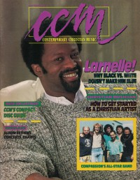

CMnexus
: Contemporary Christian culture, music, and media.
|
|
CCM, Sep 1987, vol. 10, iss. 3
| Cover |
|---|
|  | | Writers in this Issue |
|---|
Brown, Bruce A.
Christian, Chris
Christian, Teresa
Donaldson, Devlin
Eischer, Mark
Fincher, Mary Kay
Fischer, John
Fisher, Greg
Frazer, Robyn
Miller, G. L.
Newcomb, Brian Quincy
Rabey, Steve
Styll, John W.
|
Cover Feature:
- "Communicating Is More Than Just Singing" by Greg Fisher
Article:Christian Musician:
- "Getting Started as a Christian Artist" by Chris Christian
Notebook:
- "Compassion All Star Debut at Cornerstone Festival" by Brian Quincy Newcomb
- "Colorful Music For The Whole Family"
- "Christian Writers Association Formed"
- "Super Freak for Jesus?"
- "Learn Guitar With Your VCR"
Celebrating Our 10th Year:What's New:In Concert:
- "Atlanta Fest '87" by Teresa Christian
- "Joyfest II, Six Flags Great America" by G. L. Miller
- "Cornerstone '87" by Mary Kay Fincher
Cornerstone
Editorials, opinion, and commentary:
- "Wanted: Explicit Lyrics" by John W. Styll
John Fischer:
- "One Drink Away" by John Fischer
|
|